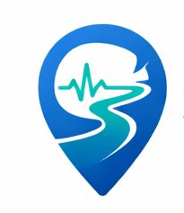

Symptom se specialist tak, aapka digital saathi
SehatMaarg (meaning "Path to Health") is a lightweight web application that helps users identify the right medical specialist based on their symptoms. Our AI-powered triage assistant analyzes your symptoms and instantly recommends the type of doctor you should visit, along with an urgency level and nearby clinics on a map.
We believe that access to basic healthcare guidance should be quick, free, and available to everyone — no app installations, no sign-ups, just open and go.
1. Enter your symptoms (text or voice).
2. Optionally add your age, gender, and existing conditions.
3. Our AI analyzes your input and recommends a specialist.
4. A map loads with nearby clinics and hospitals based on your location.
SehatMaarg does not provide medical diagnoses. It is designed as a guidance tool to help you find the right type of specialist. Always consult a qualified healthcare professional for medical advice, diagnosis, or treatment. In case of a medical emergency, call your local emergency number immediately.